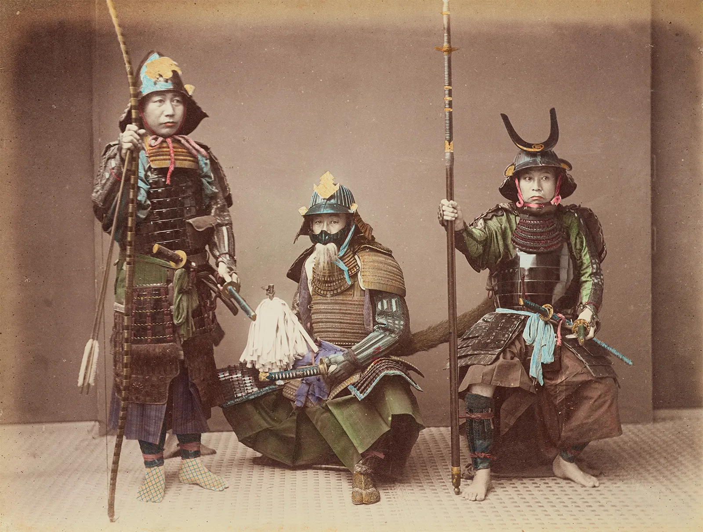

The Samurai were more than just the elite military class of feudal Japan; they were the moral and cultural guardians of the nation for nearly 700 years. Emerging in the late 12th century, these warriors were defined by their mastery of the Katana and their unwavering commitment to a strict ethical system that governed every aspect of their lives.

At the heart of the Samurai identity was Bushido, or "The Way of the Warrior." This code emphasized seven core virtues: Rectitude, Courage, Benevolence, Respect, Honesty, Honor, and Loyalty. During the peaceful Edo period, many Samurai transitioned from soldiers to scholars and bureaucrats, influencing Japanese art, tea ceremonies, and literature, leaving behind a legacy of discipline and integrity that still shapes modern Japanese society today.